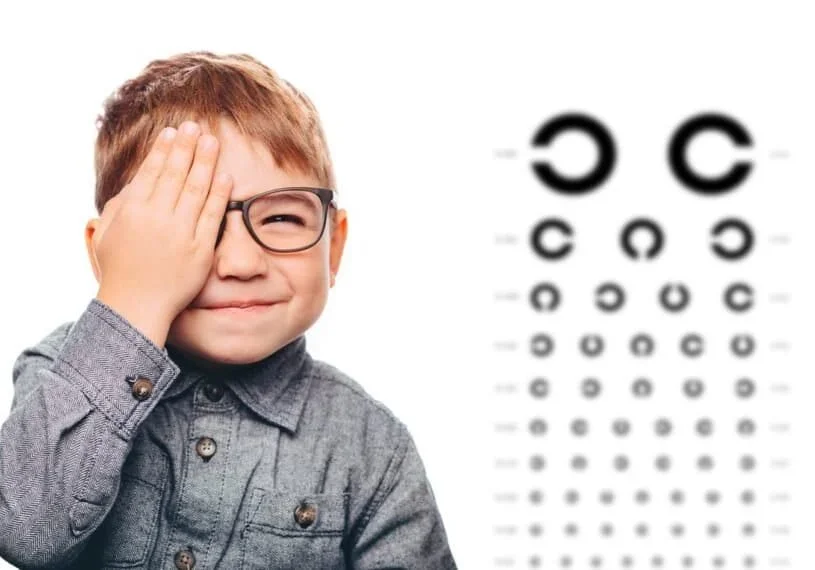

Comprehensive eye tests
Detailed vision testing and ocular health checks for prescription changes, blurred vision, headaches and preventive care.
Explore eye testsLyneham optometrist for North Canberra
Comprehensive eye examinations, diagnostic imaging and personalised treatment plans delivered with time, clarity and clinical depth.
Comprehensive services
Each appointment is structured to answer the immediate concern, check for hidden risk and give patients a practical plan for long-term eye health.
Detailed vision testing and ocular health checks for prescription changes, blurred vision, headaches and preventive care.
Explore eye tests
Targeted assessment for gritty, watery or tired eyes with practical management for comfort and stable vision.
Explore dry eye careOptic nerve assessment, pressure checks and imaging for early detection and ongoing monitoring.
Explore glaucoma testing
Child-friendly examinations for learning, focusing, eye teaming and healthy development.
Explore children's eye testsRetinal checks for diabetes-related changes, with reports and referral pathways when needed.
Explore diabetic eye careClear referral guidance for cataract, retinal, paediatric, glaucoma and refractive concerns.
Ask about referralsPrincipal optometrist
B.Optom(Hons) B.Sc UNSW
With over 15 years of experience across private practice and ophthalmic surgery environments, Phil brings a comprehensive approach to eye care. He has worked alongside leading ophthalmologists across retinal, paediatric, cataract and refractive specialties, with deep experience in ocular disease management, surgical co-management and advanced diagnostic imaging.
Phil has contributed to dry eye research, served on expert advisory panels for major therapeutic companies and teaches as a clinical educator at the University of Canberra.
Clinical difference
Premium optometry is a combination of better listening, better imaging and better follow-through. The website is built to reflect that standard.
Imaging and assessment to support early detection of glaucoma, macular degeneration, diabetic eye disease and other ocular conditions.
Risk-based care plans help patients understand what needs attention now and what should be monitored over time.
Eye tests for children, adults and older patients, with a calm communication style and clear next steps.
When medical or surgical care is required, patients are guided through the right specialist pathway.
Appointments are currently being taken from April 2026. Call the clinic or send an appointment request and the team will help find the right visit type.